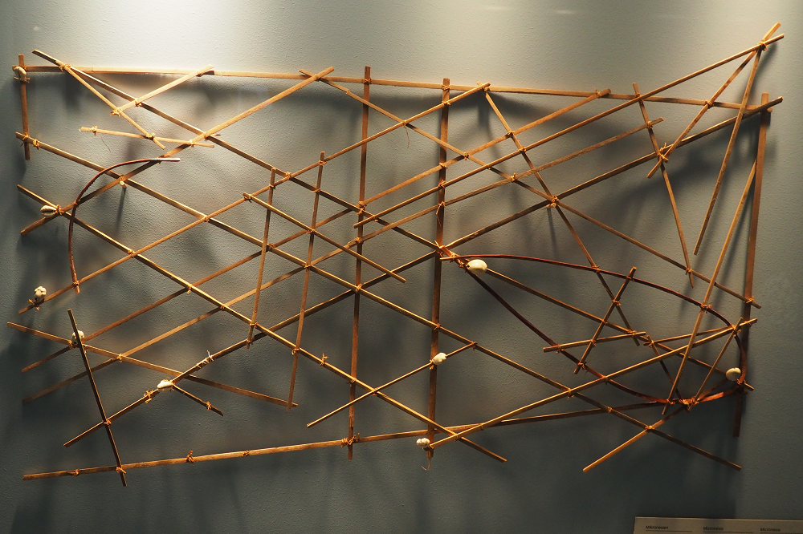

Inicio > Blog Bitácora de un bibliotecario > La forma de la memoria (04)
La forma de la memoria (04)
El mar que debía ser recordado
Cartas náuticas en las Islas Marshall y la memoria del mar
Este post forma parte de una serie que explora las múltiples formas en que las sociedades humanas han almacenado, transmitido y transformado la memoria a lo largo del tiempo, más allá de las historias restringidas centradas en los libros y la escritura. La serie aborda los archivos, los documentos y los sistemas de memoria como tecnologías históricamente situadas, moldeadas por relaciones de poder, condiciones materiales, ecologías y cosmovisiones culturales, y examina formas de transmisión frecuentemente excluidas de las narrativas dominantes sobre alfabetización y preservación: tradiciones orales, patrones tejidos, estructuras musicales, performances rituales, paisajes, cuerpos y otras infraestructuras vivas de la memoria.. Todas las entradas de esta serie pueden consultarse en el índice de esta sección.
Más allá de la costa
En las Islas Marshall, en la mitad del océano Pacífico, un navegante podía salir de un atolón y perder de vista tierra firme mucho antes de que el viaje hubiera comenzado realmente. El destino seguía siendo conocido, nombrado y estando presente, pero durante gran parte de la travesía existía como un recuerdo antes de aparecer como horizonte.
La navegación dependía no solo de saber dónde estaban las islas, sino también de reconocer cómo cambiaba el mar a su alrededor: cómo las olas se curvaban, se cruzaban, se reflejaban y transportaban en su movimiento la presencia oculta de la tierra.
Las cartas náuticas de las Islas Marshall pertenecen a ese mundo. No eran mapas comunes para llevar a bordo y consultar en el mar. Eran modelos, herramientas didácticas y estructuras mnemotécnicas a través de las cuales los navegantes aprendían a relacionar islas, olas, rutas y percepción corporal.
Su importancia documental reside en esa tensión: el objeto podía conservarse, pero no podía interpretarse completamente solo. Forma parte de una categoría documental particular: la carta no contiene todo el sistema de conocimiento, sino que prepara al usuario para adentrarse en él.
Islas bajas, mar extenso
La geografía de las Islas Marshall hace comprensible esta estructura documental. El archipiélago está formado por atolones e islas de coral bajas, dispersas en una vasta área oceánica, y organizadas en dos cadenas principales: Ratak y Rālik. No se trata de islas volcánicas altas, visibles desde grandes distancias. Se elevan apenas sobre el nivel del mar, y desde una canoa que se aproxima a ellas, la tierra puede mantenerse bajo el horizonte hasta que la embarcación esté relativamente cerca.
En tales condiciones, la navegación no puede depender únicamente de las costas visibles. Requiere atención a muchos indicadores: estrellas, vientos, aves, corrientes, color del agua, nubes, materia flotante y, sobre todo, olas.
La navegación marshallesa se hizo famosa por su refinado uso de los patrones de las olas. Los navegantes no se limitaban a navegar por aguas desiertas hacia puntos fijos, sino que aprendieron a detectar cómo las islas perturbaban el movimiento de las corrientes. Cuando las olas chocan con arrecifes, atolones y bajíos, pueden curvarse, reflejarse, cruzarse, debilitarse o generar perturbaciones distintivas. Estos cambios pueden indicar la presencia, la dirección o la distancia de tierra firme antes de que esta sea visible.
Este es el mundo al que pertenecen las cartas náuticas tradicionales. El mar no es un espacio vacío entre islas, sino un campo activo de señales. El navegante interpreta el movimiento, la presión, el ritmo, la resistencia y las perturbaciones. El océano se convierte en un medio a través del cual la tierra se anuncia indirectamente.
Esto cuestiona la analogía cartográfica convencional. Los mapas modernos suelen estabilizar la tierra y tratar el agua como fondo. La navegación marshallesa invierte esa práctica. El agua no es el espacio vacío entre lugares, sino el campo principal de orientación.
Tres formas de cartas
Las cartas náuticas marshallesas se suelen organizar en tres categorías: mattang, meddo y rebbelib, también escrito rebbelith en la literatura antigua. Estas categorías son útiles, aunque no deben considerarse rígidas. Los objetos conservados varían, las interpretaciones difieren y algunas cartas náuticas son difíciles de clasificar con precisión.
El mattang es la forma más abstracta. No representa un viaje específico entre islas particulares. Por el contrario, modela los principios generales del comportamiento de las olas alrededor de una costa cualquiera. Muestra cómo las corrientes pueden acercarse, curvarse, cruzarse o interactuar con una isla o grupo de islas. No es, por ende, un mapa en el sentido geográfico habitual. Es un modelo didáctico. Ayuda al estudiante a comprender qué tipo de relaciones son importantes en el mar.
El meddo es más específico geográficamente. Puede representar un grupo más pequeño de islas y las relaciones de las corrientes entre ellas. Se acerca más a lo que un observador externo podría llamar una carta náutica, pero no se rige por las convenciones de la cartografía occidental. Su propósito no es proporcionar un dibujo a escala del territorio, sino preservar aquellas relaciones que sean significativas para la navegación.
El rebbelib abarca un área mayor, a veces incluyendo gran parte de una cadena de islas o una porción más amplia de un archipiélago. Puede reunir relaciones insulares más extensas en un solo marco. Pero incluso aquí, el objeto no debe confundirse con una carta de estilo europeo. Su escala, orientación y relaciones internas están determinadas por el conocimiento de la navegación, no por una proyección estandarizada.
El valor de estas distinciones no reside en la pulcritud taxonómica. Demuestran que la misma tradición documental podía operar en diferentes niveles de abstracción. La forma cambiaba según el tipo de conocimiento que se organizaba.
Lo que estos objetos comparten no es un único formato cartográfico, sino una manera de reducir el mar a relaciones didácticas sin pretender que dicha reducción fuese completa. Las varillas y las caracolas seleccionaban ciertas características de un entorno dinámico y las ponían a disposición para la enseñanza. Todo lo demás debía aprenderse en otros ámbitos: mediante el habla, la memoria, la práctica y la experiencia.
La carta náutica que permanece en tierra
Una de las características más importantes de las cartas de las Islas Marshall es que no se solían llevar ni consultar durante los viajes. Se estudiaban antes de zarpar. Su información se memorizaba. El navegante llevaba el conocimiento consigo, en su mente, en su cuerpo y en su atención entrenada.
En muchos sistemas documentales modernos, la consulta es fundamental. Un documento permanece en algún lugar hasta que alguien lo recupera. Un libro se abre. Un mapa se despliega. Un archivo se busca. El documento permanece fuera del cuerpo y se puede consultar como una autoridad externa.
Las cartas náuticas de las Islas Marshall funcionaban de manera diferente. Su poder documental debía transferirse a la memoria antes del viaje. La carta ayudaba a formar al navegante, pero el viaje en sí dependía de una percepción educada. En el mar, la interfaz activa no era el objeto. Era la canoa, el cuerpo, las olas y la capacidad del navegante para diferenciar patrones marinos significativos del movimiento ordinario.
El documento entrenaba al lector para que pudiera dejar el documento atrás.
Esto dificulta la conservación de la carta náutica tradicional en archivos y museos. Un objeto conservado puede catalogarse, fotografiarse, medirse y exhibirse. Sus materiales pueden estabilizarse. Su tipología puede describirse. Pero su historia documental completa no puede recuperarse únicamente a partir de la estructura de la carta. El objeto presupone un intérprete capacitado.
Algunos relatos destacan que incluso una persona entrenada podría no ser capaz de interpretar completamente una carta sin la ayuda de su creador. Este hecho revela la estructura del propio sistema documental. El significado no reside exclusivamente en el artefacto, sino que se distribuye.
Por lo tanto, una carta tradicional no es un documento autónomo. Es un nodo en una relación entre creador, aprendiz, navegante, canoa, mar, memoria y práctica.
Olas, nudos, raíces
Varios conceptos marshalleses sobre el mar ayudan a mostrar la riqueza de este sistema.
Un patrón importante se refiere a la transformación de las corrientes en torno a las islas. Las corrientes pueden rodear los atolones y crear patrones de cruce al abrigo de la costa. Investigaciones colaborativas recientes, que comparan la navegación de las Islas Marshall con modelos oceanográficos, han demostrado que al menos un patrón de este tipo, llamado nit in kōt, puede explicarse como uno de cruce de olas de sotavento producido por la refracción del oleaje de los vientos alisios del este.
Otro concepto es dilep, a menudo descrito como una trayectoria o patrón de olas que une islas. Las explicaciones tradicionales lo describen mediante el cruce o la interacción de oleajes. Los nodos de intersección se denominan booj, palabra asociada a la idea de "nudo". Una línea formada a través de estas intersecciones suele llamarse okar, "raíz". Descripciones antiguas comparan seguir el okar hacia una isla con seguir una raíz hacia un árbol.
La imagen es precisa sin ser decorativa. El navegante no se limita a moverse de un punto a otro. Sigue una relación estructurada a través de un campo de movimiento. Se aproxima a la isla mediante olas, cruces, nudos, raíces y correcciones corporales. El mar no es una superficie sobre la que uno se mueve. Es una estructura que se aprende a interpretar.
Pero es preciso tener cuidado. No todos los conceptos marshalleses se traducen fácilmente a la terminología oceanográfica occidental. Algunos patrones de olas pueden modelarse de forma convincente mediante la refracción, la reflexión o el cruce de corrientes. Pero otros siguen siendo difíciles de conciliar con las mediciones disponibles o las explicaciones científicas modernas. Esto no significa que sean falsos, sino que la relación entre el conocimiento navegacional indígena y la oceanografía occidental no es sencilla.
Eso es un recordatorio de que la carta pertenece a una práctica más amplia de percepción, instrucción y movimiento.
Secreto, autoridad y transmisión
La navegación marshallesa no era un conocimiento general compartido por todos. Era un saber especializado, mantenido en manos de los navegantes y transmitido a través de líneas de enseñanza selectas. Esto es importante para comprender las cartas. Su parcial opacidad no es solo un problema que afecta a los museos modernos. Ya formaba parte de su vida social original. El conocimiento de las rutas, las señales de las olas y su interpretación conferían autoridad. Los navegantes no eran meros técnicos. Poseían una forma de pericia ligada al movimiento, el intercambio, el poder, la seguridad y la supervivencia. La capacidad de cruzar entre atolones posibilitaba la comunicación, las alianzas, el movimiento de recursos y las conexiones políticas en todo el archipiélago.
Por ello, el conocimiento navegacional solía estar custodiado. Solía transmitirse selectivamente. Solía conservarse como conocimiento familiar o educativo. Una carta náutica podía preservar información, pero no democratizarla. Podía ayudar a enseñar a un aprendiz, pero no abrir el sistema a todos.
Este punto ayuda a evitar la suposición moderna de que los documentos en general, y los mapas en particular son, por naturaleza, instrumentos accesibles. Muchos no lo son. Algunos son elementos de transmisión restringida. Algunos estabilizan el conocimiento sin hacerlo público. Algunos preservan la autoridad precisamente porque solo ciertas personas saben cómo utilizarlos.
Un mapa de varillas puede ser visible y restringido al mismo tiempo. Su apertura es material, pero su legibilidad es social.
Interrupción colonial y la cadena rota
La historia de la navegación en las Islas Marshall no puede separarse de la interrupción colonial.
Los viajes de larga distancia en canoa disminuyeron drásticamente durante el siglo XX. Las administraciones coloniales alemana y japonesa afectaron el movimiento entre islas. El transporte moderno cambió el valor que se le daba a las canoas de vela. La guerra y la ocupación militar interrumpieron la vida local. Después de la Segunda Guerra Mundial, las pruebas nucleares estadounidenses en las Islas Marshall tuvieron consecuencias catastróficas, especialmente para Bikini, Enewetak, Rongelap y otras comunidades afectadas. El desplazamiento, la contaminación, la reubicación y la interrupción de la vida cotidiana dañaron las condiciones bajo las cuales el conocimiento tradicional podía continuar.
El problema no se imita a que ciertos objetos se recolectaran y se colocaran en museos. El problema principal radica en el debilitamiento de la ecología viva de la navegación: canoas, rutas, aprendizaje, autoridad, práctica y la continuidad de la vida indígena.
El conocimiento no desapareció de un día para el otro. Sobrevivió en los ancianos, en la memoria colectiva, en prácticas parciales, en modelos, en relatos y en esfuerzos de revitalización. Pero lo hizo bajo una inmensa presión.
El trabajo reciente con navegantes marshalleses, incluyendo al Capitán Korent Joel y la organización Waan Aelōñ en Majel, ha consistido en esfuerzos por reaprender, reinterpretar y revitalizar la navegación tradicional. Estos esfuerzos no son simples actos de recuperación, como si un sistema completo hubiera permanecido intacto. Son actos de negociación. El conocimiento superviviente debe transmitirse en un contexto cambiante. Los modelos antiguos deben compararse, recordarse, ponerse a prueba y, a veces, reinterpretarse. Las diferentes escuelas de navegación pueden conservar distintas explicaciones. Los conceptos indígenas y los modelos oceanográficos pueden coincidir en algunos casos y divergir en otros.
Esa tensión forma parte del archivo. La carta náutica tradicional no es solo un documento de navegación. También es uno que evidencia la dificultad de documentar la navegación tras una ruptura.
Conservación sin uso
La conservación en museos otorga una segunda vida a las cartas náuticas de varillas de las Islas Marshall. Sus estructuras abiertas resultan visualmente impactantes. Pueden exhibirse como ejemplos de ciencia indígena, cartografía no occidental, navegación oceánica o etnomatemática. Cuestionan la antigua suposición de que el pensamiento espacial sofisticado requiere escritura, instrumentos, papel o las convenciones cartográficas europeas.
Pero la conservación también crea una ilusión. Dado que el objeto sobrevive, podemos llegar a pensar que el conocimiento asociado también lo hace. Pero no es así.
Una carta de varillas puede haberse mantenido intacta, pero su mundo interpretativo ha cambiado. Las caracolas, las varas, los nudos, todo permanece. Pero las rutas, las prácticas de entrenamiento, las habilidades de navegación en canoa, las sensaciones que generan las olas, las enseñanzas restringidas y la autoridad vivida de los navegantes no rodean al objeto como lo hacían antes. El artefacto conservado ha sido separado de las condiciones que lo hicieron funcional.
Su supervivencia es, por lo tanto, real pero incompleta. El objeto se mantiene disponible para su estudio, exhibición e interpretación, en tanto que la práctica que en su día lo hizo plenamente útil debe abordarse a través de otras huellas: testimonios, enseñanza, experimentación, recuperación y el conocimiento que aún conservan los navegantes de las Islas Marshall.
Un documento hecho para la práctica
Las cartas náuticas marshallesas cuestionan la suposición de que los documentos son autosuficientes. No conservan el conocimiento de navegación como un objeto cerrado que pueda separarse de las personas, las prácticas y los entornos que en su día lo hicieron útil. Sus marcos abiertos hacen visibles ciertas relaciones, pero no las completan por sí solos.
La carta funciona dentro de un sistema más amplio de instrucción, memorización, interpretación y experiencia. Es un documento no porque contenga todo el conocimiento navegacional, sino porque ayuda a organizar las condiciones a través de las cuales ese conocimiento puede aprenderse y transmitirse.
Para una historia documental, esta distinción es esencial. La carta náutica no es un libro raro, ni es un mero equivalente no occidental de una carta náutica. Pertenece a otra lógica informacional, en la que un objeto sustenta la memoria sin sustituirla, fija ciertas relaciones sin otorgarles plena autonomía, y da forma a un conocimiento que sigue dependiendo de la práctica.
Estos objetos marcan un tránsito entre la enseñanza y el uso, y entre lo que puede modelarse y lo que aún debe reconocerse a través del movimiento.
Bibliografía
- Ascher, Marcia. (1995). Models and Maps from the Marshall Islands: A Case in Ethnomathematics. Historia Mathematica, 22 (4), pp. 347-370.
- Davenport, William H. (1960). Marshall Islands Navigational Charts. Imago Mundi, 15, pp. 19-26.
- Genz, Joseph H. (2016). Resolving Ambivalence in Marshallese Navigation: Relearning, Reinterpreting, and Reviving the "Stick Chart" Wave Models. Structure and Dynamics, 9 (1), pp. 8-40.
- Genz, Joseph H.; Aucan, Jérôme; Merrifield, Mark; Finney, Ben; Joel, Korent; and Kelen, Alson. (2009). Wave Navigation in the Marshall Islands: Comparing Indigenous and Western Scientific Knowledge of the Ocean. Oceanography, 22 (2), pp. 234-245.